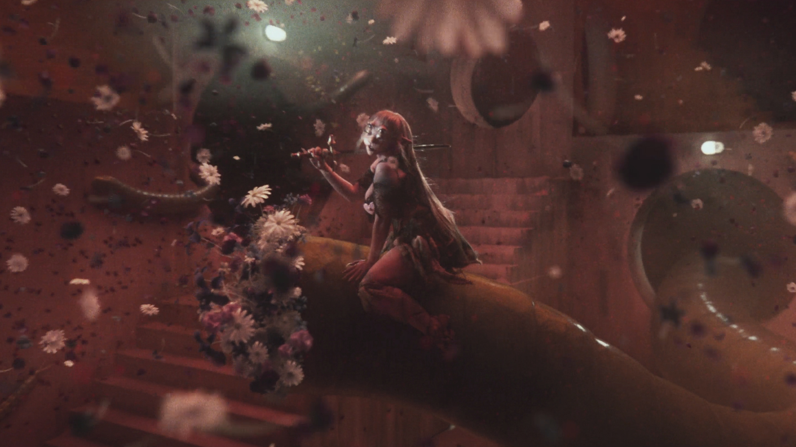
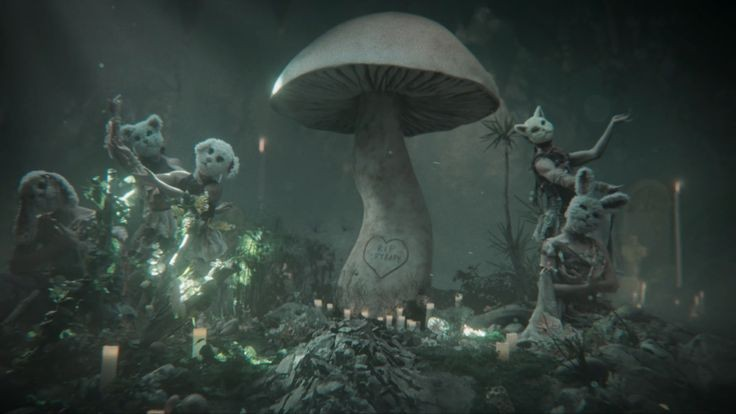

Muitos se questionam sobre o que vem depois da 𝙢𝙤𝙧𝙩𝙚, o que pode ser um paraíso ou até mesmo as trevas. Porém pode não ser exatamente isso, o que aconteceria se você reencarnasse em uma 𝐧𝐨𝐯𝐚 𝐟𝐨𝐫𝐦𝐚? Algo totalmente novo, como: quatro olhos, duas orelhas gigantes ou até mesmo um tom de pele totalmente inesperado, como um rosa bebê.
Bom isso pode ser claramente descrito pela "𝑪𝒓𝒚 𝑩𝒂𝒃𝒚", personagem interpretada pela 𝐌𝐞𝐥𝐚𝐧𝐢𝐞 𝐌𝐚𝐫𝐭𝐢𝐧𝐞𝐳 em sua trilogia em álbums musicais, remetendo a críticas sociais e problemas enfretados pela sociedade no mundo atual.

Após um álbum sobre sua 𝙞𝙣𝙛𝙖̂𝙣𝙘𝙞𝙖 𝙘𝙤𝙣𝙩𝙪𝙧𝙗𝙖𝙙𝙖 e um 𝒇𝒊𝒍𝒎𝒆 𝒎𝒖𝒔𝒊𝒄𝒂𝒍 mostrando sua 𝙫𝙞𝙙𝙖 em um 𝐜𝐨𝐥𝐞́𝐠𝐢𝐨 𝐭𝐨𝐭𝐚𝐥𝐦𝐞𝐧𝐭𝐞 𝐞𝐬𝐪𝐮𝐢𝐬𝐢𝐭𝐨, quase podendo ser chamado de 𝒉𝒐𝒔𝒑𝒊́𝒄𝒊𝒐, ao adentrar um portal misterioso "𝑪𝒓𝒚 𝑩𝒂𝒃𝒚" morre e reencarna em um completo 𝘂𝗻𝗶𝘃𝗲𝗿𝘀𝗼 𝗺𝗶́𝘀𝘁𝗶𝗰𝗼, onde tudo é possível, até mesmo para os 𝗶𝗺𝗼𝗿𝘁𝗮𝗶𝘀 como ela.
O que aconteceria se você ficasse preso no 𝙫𝙖𝙯𝙞𝙤 ou até mesmo fosse para uma 𝙣𝙤𝙞𝙩𝙚 𝙘𝙤𝙢 𝙖𝙨 𝙛𝙖𝙙𝙖𝙨? Isso pode ser explicado por seu alter-ego e descrito em apenas uma sequência: "𝗘́ 𝗺𝗼𝗿𝘁𝗲, 𝗲́ 𝘃𝗶𝗱𝗮, 𝗲́ 𝗺𝗼𝗿𝘁𝗲..."
